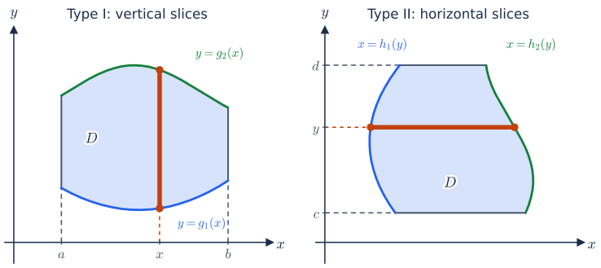
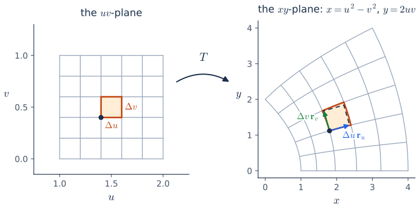

Add up quantities spread over a region of the plane or of space, such as the volume under a surface, the mass of a plate, the balance point of a solid or the probability that a random point lands in a region. You will define double and triple integrals as limits of Riemann sums, evaluate them one variable at a time, choose the coordinates (polar, cylindrical, spherical or your own) that make them easy, and prove the value of the Gaussian integral that Module 12 quoted.
⏱ 270 minYou need: Modules 1 to 18, in particular the definite integral (Module 9), the Fundamental Theorem and substitution (Module 10), applications and improper integrals (Module 12), polar coordinates and vectors (Module 16) and partial derivatives (Module 17)
In this module you will
Define a double integral as a limit of double Riemann sums, and evaluate it as an iterated integral with Fubini’s theorem
Describe a region by its boundary curves in either order, set up the limits from a sketch, and reverse the order of integration
Evaluate double integrals in polar coordinates, and prove that ∫−∞∞e−x2dx=π
Compute areas, volumes, masses, centres of mass, moments of inertia and probabilities with multiple integrals
Set up and evaluate triple integrals in rectangular, cylindrical and spherical coordinates
Change the variables of a double integral with the Jacobian
1
Volumes and double integrals
Module 9 found the area under a curve by cutting an interval into short pieces, standing a thin rectangle on each and adding up the rectangles; the limit of those sums is the definite integral. This module takes the same idea up one dimension. For a continuous, nonnegative function of two variables f(x,y), picture its graph z=f(x,y) as a surface, as in Module 17. Over a rectangle in the xy-plane, the solid between the rectangle and the surface has a volume. Cut the region into small rectangles, stand a thin box on each, and add up the boxes: the limit of these sums is the double integral. It computes much more than volumes: masses, averages and probabilities too. A sum of the same kind is how a computer adds up anything recorded on a grid: the rainfall on each square of a weather map times the area of the square, added over a river’s catchment, approximates the volume of water that fell on it.
Start with a rectangle in the xy-plane, with a<b and c<d,
R=[a,b]×[c,d]={(x,y):a≤x≤b,c≤y≤d},
read “[a,b] cross [c,d]”: the points whose x lies in [a,b] and whose y lies in [c,d]. Suppose first that f(x,y)≥0 on R. The solid that lies above R and below the surface z=f(x,y) is the set of points (x,y,z) with (x,y) in R and 0≤z≤f(x,y). What is its volume?
Cut [a,b] into m subintervals of width Δx=(b−a)/m and [c,d] into n subintervals of width Δy=(d−c)/n. The lines x=xi and y=yj through the cut points divide R into mn small rectangles
Rij=[xi−1,xi]×[yj−1,yj],
each of area ΔA=ΔxΔy. Choose a sample point(xij∗,yij∗) in each Rij and stand on Rij a box of height f(xij∗,yij∗). Its volume is f(xij∗,yij∗)ΔA, and together the boxes have the volume
i=1∑mj=1∑nf(xij∗,yij∗)ΔA,
a double Riemann sum. The two summation signs add one term for every pair (i,j):mn terms in all (Figure 19.1).
Figure 19.1
Sixteen boxes under the surface z=8−x2−y2 over the square [0,2]×[0,2] (Example 19.1 with n=4). Each box stands on a small square of area ΔA=0.25, and its height is the value of f at the corner of its square farthest from the origin. There f is smallest on the square, so every box lies under the surface: the grid lines drawn on the surface pass through the far top corners of the boxes. Together the boxes have volume 17, less than the volume 64/3≈21.33 under the surface.
Example 19.1Trapping a volume✓ Checked
Let f(x,y)=8−x2−y2 and R=[0,2]×[0,2]. Cut R into four squares of side 1. Find two double Riemann sums that trap the volume V of the solid under the surface z=f(x,y) and above R, and the sum whose sample points are the centres of the squares.
The squares are [0,1]×[0,1],[1,2]×[0,1],[0,1]×[1,2] and [1,2]×[1,2], each of area ΔA=1. For x≥0 and y≥0,f decreases as x grows and as y grows, because x2 and y2 grow. So on each square f is largest at the corner nearest the origin and smallest at the corner farthest from it. With the far corners (1,1),(2,1),(1,2) and (2,2) as sample points, the boxes lie under the surface, and their total volume is
(f(1,1)+f(2,1)+f(1,2)+f(2,2))⋅1=6+3+3+0=12.
With the near corners (0,0),(1,0),(0,1) and (1,1), the boxes contain the solid:
(f(0,0)+f(1,0)+f(0,1)+f(1,1))⋅1=8+7+7+6=28.
So 12≤V≤28. The centres (21,21),(23,21),(21,23) and (23,23) give the single estimate
7.5+5.5+5.5+3.5=22.
Section 19.2 shows that V=364≈21.33.
Smaller squares close the gap. Cut each side of R into n equal parts, making n2 squares of side 2/n, and compute the three sums: Ln with the far corners (a lower sum), Un with the near corners (an upper sum) and Mn with the centres (a midpoint sum).
n
Ln
Un
Mn
2
12
28
22
4
17
25
21.5
8
19.25
23.25
21.375
16
20.3125
22.3125
21.34375
32
20.828125
21.828125
21.3359375
The lower sums rise and the upper sums fall, and the gap between them, Un−Ln=32/n, halves each time n doubles. The midpoint sums close in on 364=21.333… much faster: the error, exact value minus approximation, is 364−Mn=−3n28. Its magnitude is divided by 4 each time n doubles, as for the midpoint sums of Module 9.
Definition 19.1Double integral over a rectangle
Let f be defined on the rectangle R=[a,b]×[c,d], with a<b and c<d. Then f is integrable on R if there is a number I that its double Riemann sums approach: for every ε>0 there is a whole number N such that
i=1∑mj=1∑nf(xij∗,yij∗)ΔA−I<ε
whenever m≥N and n≥N, wherever the sample points are. Then I is the double integral of f over R:
The symbol ∬Rf(x,y)dA reads “the double integral over R of f of x,y,dA”, and dA, the element of area, recalls the areas ΔA of the small rectangles. When f≥0 on R, the double integral is the volume of the solid between R and the graph of f: it defines that volume, and it agrees with the volumes of boxes, prisms and pyramids that you already know. Where f is negative the boxes hang below the xy-plane and count as negative, so in general the double integral is a signed volume, like the signed area of Section 9.4. Module 9 allowed subintervals of different widths too; here equal widths keep the notation light, and a definition with unequal widths gives the same double integrals.
Theorem 19.1Integrable functions
If f is continuous on the rectangle R, then f is integrable on R. More generally, f is integrable on R if it is bounded on R and continuous at every point of R except those on finitely many curves, each the graph y=g(x) or x=h(y) of a continuous function on a closed interval.
As in Module 9, the proof belongs to a course in real analysis, and this series uses the theorem without proof. Its second sentence matters in Section 19.3, where a function is set to 0 outside a region and jumps along the region’s boundary. The properties of single integrals (Section 9.5) carry over, with the same proofs from the Riemann sums: for integrable f and g and a constant c,
∬R(f+g)dA∬RcfdA=∬RfdA+∬RgdA,=c∬RfdA,
and if f(x,y)≤g(x,y) at every point of R, then ∬RfdA≤∬RgdA.
Watch out
Each term of a double Riemann sum is a volume, the height f(xij∗,yij∗) times the area ΔA=ΔxΔy of the small rectangle, not the height alone. In Example 19.1 with n=4 the sixteen far-corner heights add up to 68, and only multiplying by ΔA=0.25 gives the lower sum L4=17.
2
Iterated integrals and Fubini’s theorem
Limits of double sums are hard to compute directly. Module 12 had a better way to find a volume: slice the solid, find the area of each slice, and integrate the areas (Section 12.3). Fix x in [a,b], and slice the solid of Section 19.1 by the plane through x parallel to the yz-plane. The slice is the region under the curve z=f(x,y),c≤y≤d, with x held constant, and its area is
A(x)=∫cdf(x,y)dy.
Computing it is partial integration with respect to y: treat x as a constant and integrate in y, as a partial derivative treats x as a constant and differentiates in y (Module 17). The result is a function of x alone. Integrating the areas of the slices gives the volume:
V=∫abA(x)dx=∫ab[∫cdf(x,y)dy]dx.
The right side is an iterated integral, usually written without the brackets,
∫ab∫cdf(x,y)dydx.
Work from the inside out: the inner integral, whose dy and limits c and d sit nearest to f, comes first. Slicing the other way, by planes y=constant, gives the iterated integral ∫cd∫abf(x,y)dxdy, with the x-integral inside.
Example 19.2The volume of Example 19.1✓ Checked
Find the volume under z=8−x2−y2 and above R=[0,2]×[0,2], slicing first by planes x=constant and then by planes y=constant.
Slices at fixed x. With x held constant, an antiderivative of 8−x2−y2 with respect to y is 8y−x2y−3y3, so
For example, A(0)=340 is the area under the parabola z=8−y2 for 0≤y≤2, the face of the solid in the plane x=0. Then
V=∫02(340−2x2)dx=380−316=364.
Slices at fixed y. The integrand does not change when x and y are swapped, so the same steps with the letters swapped give the inner integral ∫02(8−x2−y2)dx=340−2y2 and again V=364≈21.33. It lies between the bounds 12 and 28 of Example 19.1, close to the midpoint estimate 22.
Both orders gave the volume that the boxes of Section 19.1 approach. That is no accident:
Theorem 19.2Fubini’s theorem
If f is continuous on the rectangle R=[a,b]×[c,d], then
More generally, if f is bounded on R and continuous except on finitely many curves of the kind in Theorem 19.1, then either iterated integral equals ∬RfdA whenever its inner integrals exist for every value of the outer variable; their outer integral then exists too. If both orders meet this condition, both give the double integral.
For f≥0 the theorem says that slicing gives the volume that the boxes define. Its power is in computing: a double integral becomes two single integrals, each done with the methods of Modules 10 and 11, in whichever order is easier. The Going deeper box below proves it for continuous f.
Going deeperWhy Fubini’s theorem holds
Here is a proof for continuous f. It takes one fact from real analysis on trust: the function A(x)=∫cdf(x,y)dy is continuous on [a,b]. (This rests on a property of functions continuous on a closed rectangle called uniform continuity.) Then A is integrable on [a,b] (Theorem 9.3).
Cut [a,b] and [c,d] into m and n equal parts, and choose any points xi∗ in [xi−1,xi]. By additivity over intervals (Theorem 9.6) and the Mean Value Theorem for integrals (Theorem 9.9), applied to the continuous function y↦f(xi∗,y) on each [yj−1,yj], there are points yij∗ in [yj−1,yj] with
The right side is a double Riemann sum of f, with the sample point (xi∗,yij∗) in Rij. Let I=∬RfdA and ε>0, and take N as in Definition 19.1. For m≥N, choose n=m: the right side is within ε of I. The left side does not involve n at all; it is a Riemann sum of A on [a,b] with m equal subintervals. So every such Riemann sum of A with m≥N is within ε of I, whatever the points xi∗. Their limit as m→∞ is therefore I; by Theorem 9.4 it is also ∫abA(x)dx. That proves the first equality. The second follows in the same way with the roles of x and y swapped.
The hypothesis cannot be dropped. On R=[0,1]×[0,1], let
f(x,y)=(x2+y2)2x2−y2
for (x,y)=(0,0), and f(0,0)=0. For x>0 the quotient rule shows that ∂y∂(x2+y2y)=f(x,y), so the inner integral is ∫01f(x,y)dy=x2+11. At x=0, however, f(0,y)=−1/y2 for y>0, and that inner integral diverges. We therefore take the outer integral as an improper limit:
But swapping x and y changes the sign of f, so limε→0+∫ε1∫01f(x,y)dxdy=−4π. These two improper iterated limits disagree. The function is not bounded on R: along the x-axis, f(x,0)=1/x2, which grows without bound as x→0. Fubini’s theorem does not apply, and f has no double Riemann integral over R as defined in Section 19.1.
Example 19.3Choosing the order✓ Checked
Evaluate ∬Rxcos(xy)dA, where R=[0,π]×[0,1].
The integrand is continuous, so by Fubini’s theorem either order gives the answer. Integrating first in y is the easy way. With x held constant, the chain rule gives ∂y∂sin(xy)=xcos(xy), so
In the other order, the inner integral ∫0πxcos(xy)dx needs integration by parts (Module 11), and for 0<y≤1 it gives
yπsin(πy)+y2cos(πy)−1.
An antiderivative of this is y1−cos(πy), which takes some finding, and the integral from 0 to 1 needs a limit at y=0; the answer is 2 again. When one order is hard, try the other.
When g is continuous on [a,b] and h is continuous on [c,d], their product g(x)h(y) is continuous on the rectangle R. The inner integral of ∫ab∫cdg(x)h(y)dydx is g(x)∫cdh(y)dy, a constant times g(x), and Fubini’s theorem splits the double integral into a product:
∬Rg(x)h(y)dA=∫abg(x)dx∫cdh(y)dy.
For example, ∬RsinxcosydA=1⋅1=1 over R=[0,π/2]×[0,π/2]. This product rule needs a rectangle, whose limits are constants; Section 19.4 uses it to compute the Gaussian integral.
The average value of a function of one variable is its integral divided by the length of the interval (Section 9.7). In two variables, divide by the area.
Definition 19.2Average value
The average value of a function f integrable on a rectangle R of positive area is
favg=A(R)1∬Rf(x,y)dA,
where A(R)=(b−a)(d−c) is the area of R.
It is the number that the averages of f over the sample points of finer and finer grids approach, as in Module 9; when f≥0, a box of height favg on R has the same volume as the solid under the graph. The surface of Example 19.2 has the average height 364/4=316≈5.33 over the square [0,2]×[0,2]. Section 19.3 extends the definition to other regions, with the area of the region in place of A(R).
Compute itDouble integrals by computer
SymPy’s integrate takes one tuple per integral, the inner one first: (y, 0, 2) below is the inner integral, in y.
Python
import sympy as sp
x, y = sp.symbols('x y')
f = 8 - x**2 - y**2print(sp.integrate(f, (y, 0, 2))) # the inner integral A(x)print(sp.integrate(f, (y, 0, 2), (x, 0, 2))) # y first, then xprint(sp.integrate(x*sp.cos(x*y), (y, 0, 1), (x, 0, sp.pi)))
Output
40/3 - 2*x**2
64/3
2
These are A(x) and the volume of Example 19.2, and the integral of Example 19.3. Numerically, a midpoint sum adds f at the centres of an n×n grid. NumPy’s meshgrid builds every pair of centres (xi,yj) at once, so even a million boxes take a fraction of a second:
Python
import numpy as np
defmidpoint2d(f, a, b, c, d, n):
dx, dy = (b - a)/n, (d - c)/n
xs = a + (np.arange(n) + 0.5)*dx # centres of the subintervals of [a, b]
ys = c + (np.arange(n) + 0.5)*dy
X, Y = np.meshgrid(xs, ys) # all n*n centres (x_i, y_j)return np.sum(f(X, Y))*dx*dy
for n in [2, 10, 100, 1000]:
print(n, midpoint2d(lambda x, y: 8 - x**2 - y**2, 0, 2, 0, 2, n))
The sums approach 364=21.333… with the signed error −3n28 found above, so each tenfold increase in n divides its magnitude by 100. The digits …0003 at n=10 are floating-point rounding: that sum is exactly 21.36.
Watch out
Keep each variable with its own limits. In ∫02∫01f(x,y)dydx the inner limits 0 and 1 belong to y, the variable of the inner dy, and the outer limits 0 and 2 belong to x. Reading them the other way round integrates over [0,1]×[0,2] instead of [0,2]×[0,1]: for f(x,y)=x2y the right reading gives 34, the wrong one 32.
3
Integrals over general regions
Most regions are not rectangles: a disc, a triangle, the region between two curves. To integrate over a bounded region D, enclose it in a rectangle R and extend f by zero:
F(x,y)={f(x,y)0if (x,y) is in D,if (x,y) is in R but not in D,
and define ∬Df(x,y)dA=∬RF(x,y)dA when the right side exists. The boxes outside D have height 0 and add nothing, so the choice of R does not matter. F usually jumps at the boundary of D, which is why Theorem 19.1 allows discontinuities along curves. Two shapes of region cover most cases (Figure 19.2).
Definition 19.3Type I and type II regions
A region D is of type I if it lies between the graphs of two continuous functions of x:
D={(x,y):a≤x≤b,g1(x)≤y≤g2(x)},
with a<b and g1(x)≤g2(x) for a≤x≤b. It is of type II if it lies between the graphs of two continuous functions of y:
D={(x,y):c≤y≤d,h1(y)≤x≤h2(y)},
with c<d and h1(y)≤h2(y) for c≤y≤d.

Figure 19.2
Left: a type I region lies between a lower curve y=g1(x) and an upper curve y=g2(x), for a≤x≤b. Each vertical line between a and b meets it in one segment (orange), from g1(x) to g2(x). Right: a type II region lies between a left curve x=h1(y) and a right curve x=h2(y), for c≤y≤d; each horizontal line between c and d meets it in one segment, from h1(y) to h2(y).
Theorem 19.3Iterated integrals over type I and type II regions
If f is continuous on a type I region D as in Definition 19.3, then
∬Df(x,y)dA=∫ab∫g1(x)g2(x)f(x,y)dydx.
If f is continuous on a type II region D, then
∬Df(x,y)dA=∫cd∫h1(y)h2(y)f(x,y)dxdy.
Proof
Take a type I region; the type II case is the same with x and y swapped. The continuous functions g1 and g2 are bounded on [a,b] (the Extreme Value Theorem, Module 3), so there are numbers c<d with c≤g1(x) and g2(x)≤d for all x in [a,b]. Let F be f extended by zero to R=[a,b]×[c,d]. The function f is bounded on the closed bounded region D (by the Extreme Value Theorem for such regions, Module 18), so F is bounded on R, and it is continuous except perhaps on the graphs of g1 and g2. By Theorem 19.1, ∬DfdA=∬RFdA exists. For each x,F(x,y) equals f(x,y) for g1(x)≤y≤g2(x) and 0 for the other y in [c,d], so
∫cdF(x,y)dy=∫g1(x)g2(x)f(x,y)dy.
For each fixed x, the function y↦F(x,y) is bounded and continuous except possibly at the two ends g1(x) and g2(x), so its integral exists by Theorem 9.3. The general form of Fubini’s theorem now gives the formula.
∎
To set up the limits, draw a picture.
Key idea
Limits from a sketch. To set up ∬DfdA:
Sketch D, label its boundary curves, and find where they meet.
For the order dydx, draw a vertical line through D at a typical x. It enters D on the lower curve y=g1(x) and leaves on the upper curve y=g2(x): these are the inner limits. The outer limits are the least and the greatest x in D.
For the order dxdy, draw a horizontal line at a typical y. It enters D on the left curve and leaves on the right curve, both written as x=…: these are the inner limits. The outer limits are the least and the greatest y in D.
These instructions describe a region of the chosen type. If a slice has several separate segments, split the region into suitable pieces and add their integrals. Splitting can also simplify a bound given by different formulas on different intervals. The outer limits are constant with respect to the integration variables; they may depend on a fixed parameter. The inner limits may depend on the outer variable, never on the inner one.
Example 19.4Both orders on a region between curves✓ Checked
Let D be the region between the parabola y=x2 and the line y=x. Evaluate ∬DxydA in both orders.
The curves meet where x2=x, at x=0 and x=1, that is, at (0,0) and (1,1). Between them the line is above the parabola, since x>x2 for 0<x<1.
Vertical slices. A vertical line at x,0≤x≤1, enters D on the parabola and leaves on the line:
Horizontal slices. As functions of y, the line is x=y and the parabola, where x≥0, is x=y. A horizontal line at y,0≤y≤1, enters D on the line and leaves on the parabola, since y≤y there:
The same answer, as Theorem 19.3 promises: D is of both types.
Try it
Start with the region of Example 19.4 and the order dydx, and move the slider: the orange segment is the slice, and the readout gives its ends twice, as formulas (the inner limits x2 and x) and as numbers. Switch to dxdy: now the slice is horizontal, the boundary curves are labelled x=y and x=y, and the inner limits change with them. Try the other regions. For the quarter disc, compare the inner limits 1−x2 and 1−y2. For the region between y=x and y=x/2, watch the outer limits change from 0≤x≤4 to 0≤y≤2. Each time, the area computed with vertical slices and with horizontal slices comes out the same.
With f=1 the double integral is the area of D. For a type I region,
A(D)=∬D1dA=∫ab(g2(x)−g1(x))dx,
the formula for the area between curves of Section 12.2. When A(D)>0 and f is integrable on D, its average value is A(D)1∬DfdA.
Two more properties follow from those of Section 19.1, assuming the integrals involved exist. If D is made of two regions D1 and D2 whose overlap has area 0, then ∬DfdA=∬D1fdA+∬D2fdA. For example, their common boundary may consist of finitely many curves of the kind in Theorem 19.1, which have area 0. And if f≥0 and D1 lies inside D2, then ∬D1fdA≤∬D2fdA, because f extended by zero outside D1 is at most f extended by zero outside D2.
Example 19.5The volume of a tetrahedron✓ Checked
For a,b,c>0, the plane ax+by+cz=1 meets the axes at (a,0,0),(0,b,0) and (0,0,c). Find the volume of the tetrahedron bounded by this plane and the three coordinate planes.
The tetrahedron is the solid under the plane, z=c(1−ax−by), above the triangle D that the coordinate axes and the line ax+by=1 cut from the xy-plane (where z=0). So D is the type I region 0≤x≤a,0≤y≤b(1−ax). Write w=1−ax for short; it does not depend on y. The inner integral is
The base triangle has area 21ab and the height is c, so V=31⋅21ab⋅c: one third of the base times the height, as for the pyramids of Section 12.3.
Watch out
The inner limits describe one slice, not the corners of the region. For the triangle 0≤y≤x≤1, writing ∫01∫01fdydx integrates over the whole square; a vertical slice at x runs only from y=0 to y=x. Keep fixed parameters distinct from integration variables. If the outer bound is a positive parameter s, write ∫0s∫01f(x,y)dydx: hold s fixed while integrating in x and y.
Reversing the order
Sometimes only one order can be done by hand.
Example 19.6An integral that needs reversing✓ Checked
Evaluate ∫01∫x1ey2dydx.
As written, the inner integral asks for an antiderivative of ey2, and there is no elementary one (Module 11). So reverse the order. The limits say that 0≤x≤1 and x≤y≤1: the region D is the triangle with vertices (0,0),(0,1) and (1,1), above the line y=x. Slice it horizontally: at height y, for 0≤y≤1, a horizontal line enters D on the y-axis and leaves on the line x=y. As a type II region D is 0≤y≤1,0≤x≤y, so
The inner integral, in x, treats ey2 as a constant and multiplies it by the length y of the slice; that factor y is what the substitution u=y2 needs (Module 10).
Compute itReversing the order by computer
SymPy can do the original order, but only with a special function:
Python
import sympy as sp
x, y = sp.symbols('x y')
inner = sp.integrate(sp.exp(y**2), (y, x, 1))
print(inner)
print(sp.simplify(sp.integrate(inner, (x, 0, 1))))
print(sp.integrate(sp.exp(y**2), (x, 0, y), (y, 0, 1))) # reversed: x first
The inner integral is written with erfi, the “imaginary error function”, a relative of the error function of Module 11 and, like it, not an elementary function. SymPy knows how to integrate it and, after simplifying, reaches -1/2 + E/2, that is, 2e−1 (E is SymPy’s name for e): the answer of Example 19.6, which the reversed order gives at once.
Watch out
To reverse an order, sketch the region and read the new limits from the picture; never move the limits around as they stand. Keeping the constant limits of ∫01∫x1ey2dydx and dropping the others gives ∫01∫01ey2dxdy=∫01ey2dy≈1.4627, the integral over the whole square: not the triangle of Example 19.6, whose integral is about 0.859.
4
Polar coordinates
Discs, rings and sectors are awkward in x and y: the disc x2+y2≤1 needs the limits ±1−x2. In the polar coordinates of Module 16, x=rcosθ and y=rsinθ with r≥0, the same disc is 0≤r≤1,0≤θ≤2π: a rectangle in r and θ. A polar rectangle is a region
{(r,θ):r0≤r≤r1,α≤θ≤β},
with 0≤r0<r1 and 0<β−α≤2π: a piece of a ring between two rays (Figure 19.3, left). The Greek letters α and β are “alpha” and “beta”.
What is its area? A sector of radius r and angle Δθ has area 21r2Δθ (Module 16), and the polar rectangle, with Δθ=β−α, is the difference of two sectors:
where Δr=r1−r0 and rˉ=2r0+r1 is the average radius. A small polar rectangle is nearly a rectangle with sides Δr, along a ray, and rˉΔθ, along an arc of radius rˉ. Its area is not ΔrΔθ but rˉΔrΔθ: polar rectangles with the same Δr and Δθ get bigger further from the origin.
Figure 19.3
Left: a polar rectangle, the part of a ring between two radii and between the rays at angles θ and θ+Δθ. Its sides are Δr along a ray and about rΔθ along an arc, and its area is exactly rˉΔrΔθ, with rˉ the average radius. Right: the disc Da of radius a lies inside the square Sa=[−a,a]×[−a,a], which lies inside the disc Da2 through its corners. The proof of Theorem 19.5 squeezes an integral over the square between integrals over the two discs.
Theorem 19.4Double integrals in polar coordinates
Let f be continuous on a region D described in polar coordinates by
α≤θ≤β,h1(θ)≤r≤h2(θ),
where 0<β−α≤2π and h1,h2 are continuous on [α,β] with 0≤h1(θ)≤h2(θ). Then
The nonnegative radii and an angle range of at most one full turn ensure that points are covered once, apart from the origin and a possible shared boundary ray when β−α=2π. Those exceptional sets have area 0 and do not change the integral.
Use dA=rdrdθ: replace x and y by rcosθ and rsinθ, and dA by rdrdθ. For a polar rectangle, h1 and h2 are the constants r0 and r1. With f=1 and h1=0, the inner integral is ∫0h2(θ)rdr=21h2(θ)2, and the theorem gives the area ∫αβ21h2(θ)2dθ: the formula for areas in polar coordinates of Module 16.
The idea of the proof. Take a polar rectangle, and cut [r0,r1] and [α,β] into m and n equal parts. The circles and rays through the cut points divide the region into mn small polar rectangles; the one between ri−1 and ri and between θj−1 and θj has area rˉiΔrΔθ, where rˉi is its average radius. With the sample point at radius rˉi and some angle θj∗, the sum
i=1∑mj=1∑nf(rˉicosθj∗,rˉisinθj∗)rˉiΔrΔθ
adds up f times the areas of the pieces of D, like a double Riemann sum. It is also an ordinary double Riemann sum of the function f(rcosθ,rsinθ)r over the rectangle [r0,r1]×[α,β] of the rθ-plane, so it approaches the right side of the theorem. That it also approaches ∬DfdA needs Riemann sums over pieces that are not rectangles, which this module does not develop; Section 19.8 places the theorem in a general rule.
Example 19.7Under a paraboloid✓ Checked
Find the volume of the solid under the paraboloid z=4−x2−y2 and above the xy-plane.
The paraboloid meets the plane z=0 in the circle x2+y2=4, so the solid stands on the disc D of radius 2, where 4−x2−y2≥0. In polar coordinates x2+y2=r2, so the height is 4−r2, and D is 0≤r≤2,0≤θ≤2π:
The cylinder of radius 2 and height 4 has volume 16π, so the dome fills exactly half of it. In x and y the same volume is ∫−22∫−4−x24−x2(4−x2−y2)dydx, a much longer computation.
Example 19.8A disc through the origin✓ Checked
Evaluate ∬Dx2+y2dA, where D is the disc bounded by the circle x2+y2=2x.
Completing the square, (x−1)2+y2=1: the disc of radius 1 centred at (1,0), which touches the origin. In polar coordinates the circle is r2=2rcosθ, that is, r=2cosθ (or r=0, the origin). The disc lies in the half-plane x≥0, so θ runs from −π/2 to π/2, and the ray at angle θ runs through D from r=0 to r=2cosθ. With x2+y2=r,
For the last integral, write cos3θ=(1−sin2θ)cosθ and substitute u=sinθ:∫−π/2π/2cos3θdθ=∫−11(1−u2)du=34. The disc has area π, so the average distance of its points from the origin is 9π32≈1.13, a little more than the distance 1 of its centre.
Watch out
Two slips with polar coordinates. Forgetting the factor r:∫02π∫01drdθ=2π is not the area of the unit disc; ∫02π∫01rdrdθ=π is. And the wrong range of θ: the circle r=2cosθ of Example 19.8 is traced once as θ runs from −π/2 to π/2. Letting θ run from 0 to 2π gives ∫02π38cos3θdθ=0, because for π/2<θ<3π/2 the “radius” 2cosθ is negative, which Theorem 19.4 does not allow.
The Gaussian integral
Module 12 needed the value of ∫−∞∞e−x2dx to show that the normal density has total area 1, and quoted it (Section 12.9) with the promise of a proof here. There is no elementary antiderivative of e−x2 (Module 11). The trick is to square the integral: the square is a double integral, and in polar coordinates the factor r makes e−r2 easy to integrate.
Theorem 19.5The Gaussian integral
∫−∞∞e−x2dx=π.
Proof
For a>0 let
Ia=∫−aae−x2dx.
The square of Ia is a double integral. The name of the variable does not matter, so Ia=∫−aae−y2dy too, and by the product rule of Section 19.2 on the square Sa=[−a,a]×[−a,a],
Ia2=∫−aae−x2dx∫−aae−y2dy=∬Sae−(x2+y2)dA.
Squeeze it between two discs. Let DR be the disc of radius R centred at the origin. The disc Da lies inside Sa, and Sa lies inside the disc Da2 through its corners (Figure 19.3, right). The integrand is positive, so a larger region gives a larger integral (Section 19.3):
∬Dae−(x2+y2)dA≤Ia2≤∬Da2e−(x2+y2)dA.
Integrate over a disc in polar coordinates. On DR,x2+y2=r2, and the substitution u=r2 (Module 10) integrates e−r2r:
Let a→∞. Both bounds approach π, because e−a2 and e−2a2 approach 0. By the squeeze theorem (Section 2.6, which holds for limits at infinity too), Ia2→π; since Ia>0 and the square root is continuous, Ia→π. Finally, e−x2 is even, so ∫0ae−x2dx=21Ia→2π, and likewise ∫−a0e−x2dx→2π. Both halves of the improper integral converge (Section 12.8, with c=0), and their sum is π.
∎
The squeeze in numbers: the middle column below comes from computing Ia numerically, and both bounds close in on π=3.14159…
a
π(1−e−a2)
Ia2
π(1−e−2a2)
0.5
0.694918
0.851121
1.23612
1
1.98587
2.23099
2.71642
1.5
2.81047
2.93223
3.10669
2
3.08405
3.11227
3.14054
3
3.14120
3.14145
3.14159
Good to know
Why the squeeze? A shorter argument writes the square of ∫−∞∞e−x2dx as one integral over the whole plane and switches to polar coordinates in one step: ∫02π∫0∞e−r2rdrdθ=π. That is the idea, but it uses a double integral over an unbounded region, which is improper and needs its own definition. The proof above uses only integrals over bounded regions and lets a→∞ at the end.
Two consequences for probability. For c>0, the substitution x=ct, with dx=cdt, gives
∫−∞∞e−ct2dt=c1∫−∞∞e−x2dx=cπ.
With c=21 this is ∫−∞∞e−t2/2dt=2π, the total area that makes the standard normal density φ(z)=e−z2/2/2π of Module 12 a density. And since the integrand is even, ∫0∞e−x2dx=2π.
5
Mass, centre of mass and probability
Volumes and areas are the start. Whenever a quantity is spread over a region with a known amount per unit area, a double integral adds it up, by the method of Section 12.1: slice (now into small rectangles), approximate, add, and take the limit.
Mass and centre of mass
A thin flat plate, a lamina, occupies a region D of the plane, and its density at (x,y), its mass per unit area, is ρ(x,y) kg/m². A small rectangle of the plate around a sample point has mass about ρΔA, and its moment about the y-axis is about its mass times its signed distance x from that axis; its moment about the x-axis uses y. Adding and taking the limit:
Definition 19.4Mass and centre of mass of a plate
Let a lamina occupy a bounded closed region D of type I or type II, or a finite union of such regions, with continuous density ρ(x,y)≥0. Its mass and its moments about the y-axis and the x-axis are
mMy=∬DρdA,=∬DxρdA,Mx=∬DyρdA,
These integrals are finite. If m>0, its centre of mass is the point (xˉ,yˉ) with
xˉ=mMy,yˉ=mMx.
If ρ is a positive constant and D has positive area, it cancels, and the centre of mass is the centroid of D.
The plate balances on a point under its centre of mass, as the rods and plates of Section 12.7 did. Module 12’s centroid formulas for a uniform plate between two graphs are this definition with the inner integral done: integrating x and y in y from g(x) to f(x) gives x(f(x)−g(x)) and 21(f(x)2−g(x)2).
Example 19.9A plate that is denser at the rim✓ Checked
A thin plate occupies the quarter disc x2+y2≤1,x≥0,y≥0, with lengths in metres, and its density is proportional to the distance from the origin: ρ=kx2+y2 kg/m², for a constant k>0 (a hypothetical plate). Find its centre of mass.
In polar coordinates ρ=kr, and the quarter disc is 0≤r≤1,0≤θ≤π/2:
So xˉ=kπ/6k/4=2π3≈0.477 m. Swapping x and y changes neither the quarter disc nor the density, so Mx=My and yˉ=xˉ: the centre of mass is (2π3,2π3), and the constant k has cancelled. A plate of constant density balances at the centroid of the quarter disc, (3π4,3π4)≈(0.424,0.424), the same height as for the half disc of Module 12: the extra mass near the rim moves the balance point outwards.
Moments of inertia
Definition 19.5Moments of inertia
The moments of inertia of the lamina of Definition 19.4 about the x-axis, about the y-axis and about the origin are
Each piece of the plate counts with its mass times the square of its distance from the axis; for I0, the distance from the origin, which is the distance from the axis through the origin perpendicular to the plate. The moment of inertia measures how hard it is to start or stop the plate turning about that axis, as mass measures how hard it is to change a velocity: a rigid body rotating at ω radians per second about a fixed axis has rotational kinetic energy 21Iω2, the counterpart of 21mv2. Because of the square, mass far from the axis counts most.
Example 19.10A disc and a ring✓ Checked
Find the moment of inertia I0 of a uniform disc of radius a>0 and mass M>0 about the axis through its centre perpendicular to the disc, and compare it with that of an ideal thin ring of the same radius and mass about the same axis.
The density is ρ=πa2M, and in polar coordinates x2+y2=r2:
I0=∫02π∫0ar2πa2Mrdrdθ=πa2M⋅2π⋅4a4=21Ma2.
In an ideal thin ring all the mass is at distance a from the centre, so I0=Ma2: twice as much. Spinning the ring up to the same angular speed takes twice the energy. This explains why placing mass near the rim can help a flywheel store rotational energy.
Joint densities
Module 12 described one random quantity by a density (Section 12.9). Some pairs of random quantities, such as the independent waiting times below, can be described by one density function of two variables. Not every pair has such a density.
Definition 19.6Joint density
A joint density is a function f(x,y)≥0 whose integral over the whole plane is 1. A pair of random variables (X,Y) has the joint density f if, for every region D,
P((X,Y)∈D)=∬Df(x,y)dA.
P((X,Y)∈D) reads “the probability that the point (X,Y) lies in D”. The integral over the whole plane is improper. For the densities of this module, which are continuous on a region and 0 outside it, it is the limit of the integrals over the squares [−a,a]×[−a,a] as a→∞, as in the proof of Theorem 19.5, and an improper double integral of a function f≥0 can be computed as an iterated integral of improper integrals, in either order. This extension of Fubini’s theorem is taken on trust here.
Independence. Two random variables X and Y with densities f1 and f2 are independent if they have a joint density that can be written as the product f(x,y)=f1(x)f2(y). Then, by the product rule of Section 19.2,
P(a≤X≤b and c≤Y≤d)=∫abf1(x)dx∫cdf2(y)dy=P(a≤X≤b)P(c≤Y≤d):
knowing where X landed does not change the chances for Y. This is independence in outline; probability theory defines independence for all random variables, and proves that for random variables with densities it amounts to this product rule.
Example 19.11Which request arrives first?✓ Checked
Two servers each wait for their next request (a hypothetical system). The waiting times, in seconds, are independent: the first, X, has the exponential density with rate 1, and the second, Y, the exponential density with rate 2 (Section 12.9). Find the probability P(Y<X) that the second server’s request arrives first.
The joint density is f(x,y)=e−x⋅2e−2y for x≥0 and y≥0, and 0 elsewhere; the integrals of the two factors over [0,∞) are both 1, so its integral over the plane is 1. The event Y<X is the part of the first quadrant below the line y=x: for each x≥0,y runs from 0 to x. So
The faster stream of requests wins with probability two thirds: its rate, 2, is two thirds of the total rate, 3. Including the boundary y=x in the integral changes nothing, because it has area 0.
Watch out
Two slips with joint densities. A joint density is not a probability, and can be larger than 1: in Example 19.11, f(0,0)=2. Probabilities come from integrating it over a region. And the limits must describe the event within the region where the density is not 0. For Y<X above, y starts at 0, where the density starts, not at −∞: the formula e−x⋅2e−2y, integrated from y=−∞, would diverge, although the density there is 0.
Compute itProbabilities by simulation
A probability can also be estimated by simulating the random variables many times and counting. NumPy’s random-number generator draws exponential waiting times directly; its scale is the mean, 1/λ. The seed makes this sequence of calls repeatable in the same software environment on the same machine; other NumPy versions or environments can give different samples:
Python
import numpy as np
rng = np.random.default_rng(2026)
N = 1_000_000
X = rng.exponential(scale=1.0, size=N) # rate 1
Y = rng.exponential(scale=0.5, size=N) # rate 2print(np.mean(Y < X)) # the fraction of trials with Y < X
Output
0.666296
The fraction is close to 32≈0.6667, as Example 19.11 found. For N independent trials of an event with probability p, the fraction’s standard deviation is p(1−p)/N. Here p=2/3, so a million trials give a standard deviation of about 0.00047. This typical sampling error decreases like 1/N; the error in a particular run need not decrease, and no fixed number of correct digits is guaranteed. Integrals in many dimensions, where grids of boxes need too many points, are often estimated by such Monte Carlo methods, with this rate when the sampled quantity has finite variance.
6
Triple integrals
A function of three variables f(x,y,z) might give the density of a solid at each point, or the temperature in a room. For a box
B=[a,b]×[c,d]×[p,q],
with a<b,c<d and p<q, cut each edge into equal parts, so that B is cut into small boxes of volume ΔV=ΔxΔyΔz, choose a sample point in each, and add up the values of f at the sample points times ΔV: a triple Riemann sum. Its limit as all three edge lengths tend to 0, independent of the sample points, is the triple integral∭Bf(x,y,z)dV, read “the triple integral over B of f,dV”. For bounded solids that are not boxes, extend f by zero to an enclosing box, as in Section 19.3, and use this definition when that extension is integrable. A solid E is of type 1 if it lies between two surfaces over a region D of the xy-plane,
E={(x,y,z):(x,y)∈D,u1(x,y)≤z≤u2(x,y)},
with u1 and u2 continuous and u1≤u2; the solid’s shadow on the xy-plane is D.
Theorem 19.6Triple integrals as iterated integrals
If f is continuous on the box B, then ∭BfdV equals an iterated integral in any of the six orders, for example
∭BfdV=∫ab∫cd∫pqf(x,y,z)dzdydx.
If f is continuous on a type 1 solid E whose shadow D is of type I or type II, then
∭EfdV=∬D[∫u1(x,y)u2(x,y)f(x,y,z)dz]dA.
The proofs follow the arguments of Theorems 19.2 and 19.3, one dimension up. The double integral over D is then set up as in Section 19.3. Solids that lie between two surfaces x=… over a region of the yz-plane, or between two surfaces y=… over a region of the xz-plane, work the same way with the letters changed. With f=1,∭EdV is the volume of E. For such a bounded closed solid, a continuous density ρ(x,y,z)≥0 gives finite mass m=∭EρdV and finite moments. If m>0, its centre of mass is (xˉ,yˉ,zˉ), where xˉ=m1∭ExρdV, and similarly for yˉ and zˉ; with positive constant density it is the centroid of E.
Example 19.12The centroid of a tetrahedron✓ Checked
Find the volume and the centroid of the tetrahedron E with vertices (0,0,0),(1,0,0),(0,1,0) and (0,0,1).
The face opposite the origin lies in the plane x+y+z=1, so E is the type 1 solid 0≤z≤1−x−y over the triangle D:0≤x≤1,0≤y≤1−x. Its volume is
so zˉ=1/61/24=41. Swapping any two of x,y and z leaves E unchanged, so xˉ=yˉ=zˉ=41. The centroid (41,41,41) is the average of the four vertices, a quarter of the way from the centroid of the face z=0 towards the opposite vertex.
Choosing the order. The same tetrahedron can be described in all six orders. Projecting it onto the yz-plane, for example, gives 0≤y≤1,0≤z≤1−y,0≤x≤1−y−z, and V=∫01∫01−y∫01−y−zdxdzdy. The recipe of Section 19.3 works one variable at a time. The innermost limits are the two surfaces through which a line parallel to that variable’s axis enters and leaves E; the other two variables describe the shadow of E on the plane of their axes, as in two dimensions. Choose the order in which the shadow and the integrals are simplest.
Watch out
In a triple iterated integral the innermost limits may depend on both outer variables, the middle limits only on the outermost variable, and the outermost limits on none. In ∫01∫01−x∫01−x−yfdzdydx, the limit 1−x−y belongs inside, with dz; it cannot move to the middle integral, where y is the variable being integrated.
7
Cylindrical and spherical coordinates
Cylindrical coordinates
Cylindrical coordinates(r,θ,z) describe a point by the polar coordinates (r,θ) of its shadow on the xy-plane and its height z, with r≥0 and z any real number. As in polar coordinates, θ is arbitrary on the z-axis:
x=rcosθ,y=rsinθ,z=z.
The cylinder x2+y2=4 becomes r=2, and the paraboloid z=x2+y2 becomes z=r2. For a type 1 solid whose shadow is described in polar coordinates, Theorem 19.6 with Theorem 19.4 for the double integral gives dV=dzdA=rdzdrdθ:
Theorem 19.7Triple integrals in cylindrical coordinates
Let E be the solid u1(x,y)≤z≤u2(x,y) over the region D given by α≤θ≤β,h1(θ)≤r≤h2(θ), with h1 and h2 as in Theorem 19.4 and u1≤u2 continuous. If f is continuous on E, then
∭EfdV=∫αβ∫h1(θ)h2(θ)∫u1u2frdzdrdθ,
where f is evaluated at (rcosθ,rsinθ,z), and the limits u1 and u2 at (x,y)=(rcosθ,rsinθ).
Example 19.13Water in a parabolic bowl✓ Checked
The bowl of Example 12.7 is the surface z=x2+y2, the parabola z=x2 turned about the z-axis (Module 12 called the vertical axis y). It holds water of uniform positive density to the depth h>0. Find the volume of the water and the height of its centre of mass.
The water is the solid r2≤z≤h over the disc 0≤r≤h,0≤θ≤2π, where the bowl is below the water level. Its volume is
so zˉ=πh2/2πh3/3=32h: two thirds of the way up, because the bowl is widest at the top. (If the rim is at z=h, pumping all the water to that height lifts its mass m by h−32h=3h on average. With constant gravitational acceleration g, the ideal work against gravity is 31mgh.)
Spherical coordinates
Balls, cones with their tip at the origin and the regions between spheres call for coordinates of their own.
Definition 19.7Spherical coordinates
For a point P=O, the spherical coordinates(ρ,θ,φ) are its distance ρ>0 from the origin O; the angle θ of its cylindrical coordinates; and the angle φ between the positive z-axis and the segment OP, with 0≤φ≤π. The angle θ is arbitrary on the z-axis. The origin is represented by ρ=0, with both angles arbitrary. In every case,
xz=ρsinφcosθ,y=ρsinφsinθ,=ρcosφ,
and ρ2=x2+y2+z2.
The Greek letters are ρ, “rho” (here a distance, not a density), and φ, “phi”. Away from the z-axis, the vertical half-plane through that axis and P contains OP, which has length ρ and makes the angle φ with the positive z-axis. Thus P has height z=ρcosφ and lies at distance r=ρsinφ from the axis (Figure 19.4); then x=rcosθ and y=rsinθ. The equation ρ=a, for a>0, describes a sphere. For 0<c<π with c=π/2,φ=c describes one cone around the z-axis; c=π/2 gives the xy-plane, and c=0 or π gives a ray along the positive or negative z-axis. The equation θ=c describes a vertical half-plane.
Good to know
Conventions differ. This series measures φ from the positive z-axis, so that φ=0 on the positive z-axis, φ=π/2 in the xy-plane and φ=π on the negative z-axis, and keeps θ for the angle around the z-axis, as in polar and cylindrical coordinates. Other references swap the two names, writing θ for the angle from the z-axis and φ for the angle around it, and geography measures latitude from the equator, not from the pole. Before you use a formula from another source, check which angle is which.
Figure 19.4
Spherical coordinates. The point P is at the distance ρ from the origin and at the angle φ from the positive z-axis. Its shadow on the xy-plane is at the distance r=ρsinφ from the origin, at the angle θ of polar coordinates, and its height is z=ρcosφ. The grey arcs outline the part of the sphere of radius ρ in the first octant; the dashed arcs through P are parts of the circle of constant φ and the half-circle of constant θ.
The volume element. A small spherical wedge, between the radii ρ and ρ+Δρ, the angles θ and θ+Δθ and the angles φ and φ+Δφ, is nearly a box. Its edge along a ray from the origin has length Δρ. Its edge along the half-circle of constant θ, which has radius ρ, has length about ρΔφ. Its edge along the circle of constant φ, which has radius r=ρsinφ about the z-axis, has length about ρsinφΔθ. The three edges meet at right angles, so the wedge has volume about ρ2sinφΔρΔθΔφ, and
dV=ρ2sinφdρdθdφ.
Theorem 19.8Triple integrals in spherical coordinates
Let E be the spherical wedge ρ0≤ρ≤ρ1,α≤θ≤β,φ0≤φ≤φ1, where 0≤ρ0≤ρ1<∞,0<β−α≤2π and 0≤φ0<φ1≤π. If f is continuous on E, then
∭EfdV=∫φ0φ1∫αβ∫ρ0ρ1fρ2sinφdρdθdφ,
where f is evaluated at the point with x=ρsinφcosθ,y=ρsinφsinθ and z=ρcosφ.
The wedge argument above is the idea of the proof; Section 19.8 gives the general reason, in which ρ2sinφ is the absolute value of a Jacobian. The angular ranges cover the solid once except at the origin, the axis and possibly an angular seam, all of which have zero volume. The same formula holds with continuous radial bounds ρ0(θ,φ) and ρ1(θ,φ) satisfying 0≤ρ0≤ρ1 on the same closed angular rectangle.
Example 19.14A ball and an ice-cream cone✓ Checked
(a) Find the volume of a ball of radius a>0. (b) Find the volume of the part of the ball that lies within the angle π/3 of the positive z-axis, an “ice-cream cone”.
(a) The ball is 0≤ρ≤a,0≤θ≤2π,0≤φ≤π. All the limits are constants and the integrand is a product of a function of each variable, so the integral splits as in Section 19.2:
(b) Now 0≤φ≤π/3, and the factor ∫0π/3sinφdφ=1−cos3π=21 replaces the 2:
V=21⋅2π⋅3a3=3πa3,
a quarter of the ball. The cone φ=π/3 is the surface z=31x2+y2, since r=ztan3π=3z on it. In x,y and z the ice-cream cone needs limits with square roots, and the inner integral meets the cone below and the sphere above; in spherical coordinates all six limits are constants.
Watch out
φ runs from 0 to π, not to 2π: at φ=π the segment OP already points down the negative z-axis. Allowing both angles to run from 0 to 2π covers almost every point of the ball twice. Keeping the signed factor sinφ would give volume 0, since ∫02πsinφdφ=0; using its absolute value would give twice the correct volume. The coordinate range must be right as well as the Jacobian. And the factor on the usual range is ρ2sinφ: without the sinφ,∫0π∫02π∫0aρ2dρdθdφ=32π2a3≈6.58a3 instead of 34πa3≈4.19a3.
Compute itCoordinates and their volume elements
SymPy’s Matrix.jacobian builds the array of all the first partial derivatives of a transformation, and .det() takes its determinant, the Jacobian of Section 19.8. For polar, cylindrical and spherical coordinates:
These are the factors in dA=rdrdθ,dV=rdzdrdθ and dV=ρ2sinφdρdθdφ. (Listing the spherical variables in the order ρ,θ,φ instead changes the sign of the determinant; the formulas use its absolute value.) A ball’s volume and the ice-cream cone of Example 19.14 follow:
Polar, cylindrical and spherical coordinates are instances of one idea: describe a region with new variables in which it is simple, and pay for the change with a factor that measures how the new variables stretch areas or volumes. In one variable this is substitution: for continuously differentiable g on [c,d] and continuous f on its image, ∫g(c)g(d)f(x)dx=∫cdf(g(u))g′(u)du (Section 10.7). The signed factor g′(u) includes orientation; the local length scale is ∣g′(u)∣. In two variables, a transformationT sends each point (u,v) of a region S of the uv-plane to a point (x,y)=T(u,v) of the xy-plane, by formulas
x=x(u,v),y=y(u,v),
and the stretching factor is a determinant. A 2 × 2 determinant is the number
acbd=ad−bc
Mathematical Foundations meets determinants with matrices, in its Module 10. The parallelogram spanned by two vectors ⟨a,c⟩ and ⟨b,d⟩ of the plane has area ∣ad−bc∣: regarded as the vectors ⟨a,c,0⟩ and ⟨b,d,0⟩ of space, they have the cross product ⟨0,0,ad−bc⟩, and the length of a cross product is the area of the parallelogram the two vectors span (Module 16).
Definition 19.8Jacobian
Let x=x(u,v) and y=y(u,v) have continuous first partial derivatives. The Jacobian of the transformation is
The symbol ∂(x,y)/∂(u,v) reads “the Jacobian of x and y with respect to u and v”. It is a function of u and v.
Theorem 19.9Change of variables in a double integral
Let S and D be bounded closed regions of type I or type II. Suppose that T has continuous first partial derivatives on a neighbourhood of S, maps S onto D, is one-to-one on the interior of S, and has a nonzero Jacobian there. Coincidences and a zero Jacobian on the boundary are allowed. If f is continuous on D, then
In short, dA=∂(u,v)∂(x,y)dudv: the absolute value of the Jacobian is the factor by which T multiplies small areas near each point. The Going deeper box below explains why; a complete proof belongs to a course in advanced calculus. In one variable the sign of g′(u) is taken care of by the order of the limits; areas have no direction, so here the absolute value does that job.
Example 19.15Polar coordinates again✓ Checked
Find the Jacobian of the polar coordinates x=rcosθ,y=rsinθ.
For r≥0 its absolute value is r, so dA=rdrdθ, as Theorem 19.4 says. For a>0, the rectangle 0≤r≤a,0≤θ≤2π is mapped onto the disc of radius a, one-to-one except on its boundary: the whole side r=0 goes to the origin, where the Jacobian is 0, and the sides θ=0 and θ=2π go to the same segment. Theorem 19.9 allows both.
Example 19.16An ellipse✓ Checked
Find the area of the region E inside the ellipse a2x2+b2y2=1, where a,b>0, and the integral ∬Ex2dA.
The transformation x=au,y=bv maps the disc u2+v2≤1 one-to-one onto E, since a2x2+b2y2=u2+v2. Its Jacobian is
∂(u,v)∂(x,y)=a00b=ab.
So the area of E is ∬abdudv over the unit disc: ab times its area π, that is, πab. In the same way, with polar coordinates in the uv-plane for the last step,
since ∫02πcos2θdθ=π (write cos2θ=21(1+cos2θ), Module 11). For a uniform elliptical plate of density ρ, this gives the moment of inertia Iy=4πρa3b=41Ma2 about the y-axis, where M=ρπab is its mass.
Example 19.17A parallelogram✓ Checked
Evaluate ∬D(2x−y)e2y−xdA, where D is the parallelogram with vertices (0,0),(2,1),(3,3) and (1,2).
The sides of D lie on the lines 2x−y=0 (through (0,0) and (1,2)),2x−y=3 (through (2,1) and (3,3)),2y−x=0 (through (0,0) and (2,1)) and 2y−x=3 (through (1,2) and (3,3)). In either Cartesian order, using one linear formula for each boundary on each piece splits D into three iterated integrals. The integrand and the sides suggest the new variables
u=2x−y,v=2y−x,
in which D becomes the square S:0≤u≤3,0≤v≤3. To find x and y, add twice the first equation to the second, 2u+v=3x, and the first to twice the second, u+2v=3y:
A check: the area of D is ∬S31dudv=31⋅9=3, and the parallelogram spanned by ⟨2,1⟩ and ⟨1,2⟩ has area ∣2⋅2−1⋅1∣=3.

Figure 19.5
On the pictured region 1≤u≤2,0≤v≤1, the transformation x=u2−v2,y=2uv maps the grid of squares one-to-one onto the curved grid on the right. The small rectangle with corner (u,v) and sides Δu and Δv (orange) becomes a small curved quadrilateral, which is nearly the parallelogram (dashed) spanned by the vectors Δuru and Δvrv. That parallelogram has area ∣∂(x,y)/∂(u,v)∣ΔuΔv.
Going deeperWhy the Jacobian measures area
Take a small rectangle in the uv-plane with one corner at (u0,v0) and sides Δu and Δv. By the linear approximation of Module 17, for small h and k,
with the partial derivatives taken at (u0,v0). In vector form, T(u0+h,v0+k)≈T(u0,v0)+hru+krv, where ru=⟨xu,yu⟩ and rv=⟨xv,yv⟩. As h runs from 0 to Δu and k from 0 to Δv, the right side fills the parallelogram with a corner at T(u0,v0) spanned by Δuru and Δvrv. So the image of the small rectangle is nearly that parallelogram (Figure 19.5), whose area is
Use a fine rectangular grid on S. Apart from pieces along its boundary, the cells are rectangles; their images divide D into small pieces, of areas about ∣J∣ΔuΔv with J the Jacobian at a corner, so
∬DfdA≈∑f(T(ui,vj))∣J(ui,vj)∣ΔuΔv,
and the right side is a Riemann sum for the right side of Theorem 19.9. The approximations improve as the grid shrinks. Turning this into a proof means controlling the boundary pieces and showing that the errors of all the linear approximations together tend to 0, which is the work of an advanced calculus course.
For a linear transformation, x=au+bv and y=cu+dv, there is nothing to approximate: T(u0+h,v0+k)=T(u0,v0)+h⟨a,c⟩+k⟨b,d⟩ exactly, so every rectangle is mapped onto a parallelogram with exactly ∣ad−bc∣ times its area. That is what happened in Example 19.17.
In three dimensions, a transformation x=x(u,v,w),y=y(u,v,w),z=z(u,v,w) has a Jacobian ∂(x,y,z)/∂(u,v,w), the determinant of the 3 × 3 array of its nine first partial derivatives. The corresponding change-of-variables rule holds for continuous integrands on bounded closed solids with boundaries of zero volume: the transformation must have continuous first partial derivatives on a neighbourhood of the source solid, map it onto the target solid, and be one-to-one with nonzero Jacobian on the source interior. Then
dV=∂(u,v,w)∂(x,y,z)dudvdw.
On the stated coordinate ranges, the absolute Jacobian is r for cylindrical coordinates and ρ2sinφ for spherical coordinates, as the compute box of Section 19.7 shows: the factors found there from pictures.
Watch out
Two slips with the Jacobian. First, use its absolute value. The transformation x=v,y=u, which swaps the axes, has Jacobian −1, yet it does not make areas negative. Second, use the Jacobian of x and y with respect to u and v: it converts dudv into dA. In Example 19.17 the formulas for u and v give at once
∂(x,y)∂(u,v)=2−1−12=3,
the reciprocal of the factor needed, 31. (For differentiable inverse transformations at matching points, the two Jacobians are nonzero reciprocals, by the chain rule.) Using 3 by mistake gives an answer 9 times too large.
9
What you learned
A double integral∬RfdA is the limit of double Riemann sums ∑i∑jf(xij∗,yij∗)ΔA: boxes on small rectangles. For f≥0 it is the volume under the graph; in general a signed volume. On a rectangle, continuous functions are integrable, as are bounded functions continuous except along finitely many continuous graphs on closed intervals.
Fubini’s theorem: for f continuous on a rectangle, ∬RfdA=∫ab∫cdfdydx=∫cd∫abfdxdy, computed from the inside out. Without suitable integrability hypotheses, the two improper orders can disagree. For continuous g and h on their intervals, ∬Rg(x)h(y)dA=∫gdx∫hdy. On a region of positive area, the average value of an integrable f is area1∬fdA.
For continuous f on a type I region a≤x≤b,g1(x)≤y≤g2(x) with continuous boundary functions, the integral is ∫ab∫g1(x)g2(x)fdydx; over a type II region, ∫cd∫h1(y)h2(y)fdxdy. Read the inner limits from a slice of a sketch; outer limits are constants. Reversing the order can make an integral easier: ∫01∫x1ey2dydx=2e−1.
In polar coordinates, use r≥0 and cover the region once, apart from its boundary: dA=rdrdθ. Squaring the Gaussian integral, squeezing the integral over a square between two discs and letting the size grow proves ∫−∞∞e−x2dx=π, and for c>0,∫−∞∞e−ct2dt=π/c.
A bounded plate with integrable density ρ≥0 and positive mass m=∬DρdA has centre of mass (mMy,mMx) with My=∬xρdA and Mx=∬yρdA, and moments of inertia Ix=∬y2ρdA,Iy=∬x2ρdA,I0=Ix+Iy; a uniform disc of radius a>0 has I0=21Ma2. A joint density is nonnegative and has total integral 1; it gives P((X,Y)∈D)=∬DfdA. Independent random variables with densities f1 and f2 have joint density f1(x)f2(y).
On a box, a continuous f has the same triple integral∭EfdV in any of six orders. For other solids, choose suitable bounds, splitting when needed; for a continuous f on a solid between two continuous surfaces over a type I or type II region, integrate in z first. With nonnegative radial coordinates and limits covering the solid once apart from boundary coincidences, cylindrical coordinates give dV=rdzdrdθ;spherical coordinates, with φ measured from the positive z-axis and 0≤φ≤π, give dV=ρ2sinφdρdθdφ. A ball of radius a>0 has volume 34πa3.
Change of variables: for a continuously differentiable, one-to-one coordinate map with nonzero Jacobian in the interior, allowing the boundary exceptions stated in Section 19.8, dA=∣∂(x,y)/∂(u,v)∣dudv. The Jacobian is xuyv−xvyu, and its absolute value is the local area scale factor. Polar coordinates have Jacobian r; for a,b>0,x=au,y=bv maps the unit disc to an ellipse of area πab. Suitable linear substitutions turn parallelograms into rectangles.
10
Exercises
Exercise 19.1★A double integral on a square
Let f(x,y)=xy2+1 and R=[0,2]×[0,2].
(a) Estimate ∬RfdA with the midpoint sum on the four squares of side 1.
(b) Find the exact value as an iterated integral, in both orders.
(c) Is the midpoint sum too large or too small? Explain why from the shape of f.
Show solution✓ Checked
(a) The centres are (21,21),(23,21),(21,23) and (23,23), where f takes the values 89,811,817 and 835. Each square has area ΔA=1, so the midpoint sum is
89+11+17+35=872=9.
(b) In the order dydx, the inner integral holds x constant:
(c) The midpoint sum, 9, is too small, by 31. In x the function is linear, and a linear function’s average over an interval is its value at the midpoint, so the x-direction causes no error. In y,f grows like y2, which curves upwards: on [0,1], for instance, y2 averages 31 but equals only 41 at the midpoint. So the value at each centre is below the average over its square.
Exercise 19.2★Limits from a sketch
Let D be the region between the curves y=x and y=x/2, and let f be continuous on D.
(a) Sketch D and find where the curves meet.
(b) Write ∬DfdA as an iterated integral in both orders.
(c) Find the area of D both ways.
(d) Find ∬DydA, and the height yˉ of the centroid of D.
Check (b) and (c) with the widget of Section 19.3.
Show solution✓ Checked
(a) The curves meet where x=x/2. Squaring, x=x2/4, so x(x−4)=0: at x=0 and x=4, the points (0,0) and (4,2). Both are true meeting points, since 4=2=4/2. At x=1 the curves are at heights 1 and 21, so y=x is the upper curve.
(b) Vertical slices: for 0≤x≤4,y runs from x/2 to x, so ∬DfdA=∫04∫x/2xfdydx. Horizontal slices: written as functions of y, the curves are x=y2 (from y=x, with y≥0) and x=2y. At y=1 they are at x=1 and x=2, so x=y2 is the left curve, and y runs from 0 to 2:
So yˉ=4/34/3=1. (With vertical slices, ∫04[2y2]x/2xdx=∫04(2x−8x2)dx=4−38=34, the same.)
Exercise 19.3★One order or two?
Let D be the triangle with vertices (0,0),(2,0) and (1,1).
(a) Using one of the triangle’s straight sides for each inner bound, explain why the order dydx needs two pieces and the order dxdy needs only one.
(b) Evaluate ∬DydA in both orders, and find the height yˉ of the centroid of D.
Show solution✓ Checked
(a) The sides of D lie on the lines y=0,y=x (from (0,0) to (1,1)) and y=2−x (from (1,1) to (2,0)). A vertical line at x enters D on y=0, but it leaves on y=x when 0≤x≤1 and on y=2−x when 1≤x≤2: the upper boundary changes formula at x=1, so split [0,2] there to use one side on each piece. A single iterated integral is also possible with the upper bound min(x,2−x), but evaluating it still involves the two formulas. A horizontal line at y,0≤y≤1, always enters on the line x=y and leaves on the line x=2−y: one formula each.
The common slip in (a) is to forget the factor r of dA, which gives ∫01r2dr⋅21=61.
Exercise 19.5★★Reverse the order
Evaluate ∫01∫x11+y3dydx.
Show solution✓ Checked
The inner antiderivative of 1+y3 is not one of our standard forms, so try reversing the order. The limits say 0≤x≤1 and x≤y≤1. For x≥0 and y≥0,y≥x is the same as x≤y2, so the region is bounded by the y-axis, the parabola x=y2 and the line y=1: a horizontal line at height y,0≤y≤1, enters it on the y-axis and leaves it on the parabola x=y2. So
(Directly, the event xy≤21 can be split into two pieces: the whole strip 0≤x≤21, and 0≤y≤2x1 for 21≤x≤1.)
Exercise 19.7★★A plate denser at the top
A thin plate occupies the half disc x2+y2≤a2,y≥0, with a>0, and its density is proportional to the distance from the x-axis: ρ=ky, with a constant k>0. Find its mass and its centre of mass, and compare with the centroid (0,3π4a) of a uniform half disc (Example 12.15).
Show solution✓ Checked
In polar coordinates the half disc is 0≤r≤a,0≤θ≤π, and ρ=krsinθ. The mass is
The plate and its density do not change when x is replaced by −x, so the moments of mirror-image pieces about the y-axis cancel: My=0 and xˉ=0. (In the integral, ∫0πcosθsinθdθ=0.) For yˉ, with ∫0πsin2θdθ=2π (write sin2θ=21(1−cos2θ)),
The centre of mass is (0,163πa), higher than the centroid 3π4a≈0.424a of a uniform half disc, because the density grows towards the top of the plate.
Exercise 19.8★★One sixth of a cube
(a) Evaluate V=∫01∫0x∫0ydzdydx.
(b) Describe the solid E over which it integrates, and write V as an iterated integral in the order dxdydz.
(c) Explain why V=61 without integrating.
(d) Find the coordinate xˉ of the centroid of E.
Show solution✓ Checked
(a) From the inside out: ∫0ydz=y, then ∫0xydy=2x2, then ∫012x2dx=61.
(b) The limits say 0≤x≤1,0≤y≤x and 0≤z≤y:E is the set of points of the unit cube with 0≤z≤y≤x≤1. For the order dxdydz, the outermost variable z runs over all its values in E, from 0 to 1. For a fixed z,y runs from z to 1, and for fixed y and z,x runs from y to 1:
V=∫01∫z1∫y1dxdydz.
(c) Every point of the cube [0,1]3 has its three coordinates in some order: x≥y≥z, as in E, or x≥z≥y, or one of the four other orders. So the six solids defined by the six orders fill the cube, and they overlap only on planes such as x=y, which have no volume. Swapping two coordinates, a reflection in a plane such as x=y, turns one of these solids into another without changing volumes, so all six have the same volume, 61 of the cube.
(d)∭ExdV=∫01x⋅2x2dx=81 (the inner two integrals are as in (a), with the factor x outside), so xˉ=1/61/8=43.
Exercise 19.9★★Inside a ball
Take a ball of radius a>0 centred at the origin, with constant density k>0, so that its mass is M=34πa3k.
(a) Find the average distance of the points of the ball from its centre.
(b) Find its moment of inertia about the z-axis, Iz=∭(x2+y2)kdV, in terms of M and a, and compare with the uniform disc of Example 19.10.
Show solution✓ Checked
(a) The average of the distance ρ over the ball is its integral divided by the volume 34πa3. With dV=ρ2sinφdρdθdφ, the integral of ρ splits into three single integrals:
∭ρdV=∫0π∫02π∫0aρ3sinφdρdθdφ=4a4⋅2π⋅2=πa4,
so the average distance is 34πa3πa4=43a. Most of a ball’s volume lies near its surface.
(b) In spherical coordinates x2+y2=r2=ρ2sin2φ, and the factor ρ2sinφ of dV makes the integrand kρ4sin3φ:
For the last integral write sin3φ=(1−cos2φ)sinφ and substitute u=cosφ:∫0πsin3φdφ=∫−11(1−u2)du=34. So
Iz=158πka5=52⋅34πa3k⋅a2=52Ma2.
A uniform disc of the same mass and radius has I0=21Ma2, more than 52Ma2: in the ball, much of the mass lies near the axis, above and below the centre.
Exercise 19.10★★★Between two hyperbolas
Let D be the region of the first quadrant bounded by the hyperbolas xy=1 and xy=4 and the lines y=x and y=4x.
(a) Show that the new variables u=xy and v=y/x describe D as the square 1≤u≤4,1≤v≤4, and that x=u/v and y=uv.
(b) Find the Jacobian ∂(u,v)∂(x,y), and check it with ∂(x,y)∂(u,v).
(c) Find the area of D.
Show solution✓ Checked
(a) In the first quadrant x>0 and y>0, so u=xy>0 and v=y/x>0. The hyperbolas are u=1 and u=4, and the lines are v=1 and v=4;D lies between both pairs, so it is described by 1≤u≤4,1≤v≤4. Conversely uv=y2 and u/v=x2, and taking the positive roots, y=uv and x=u/v. So each point of the square comes from exactly one point of D.
the reciprocal of 2v1, as the pitfall of Section 19.8 says it must be.
(c) The Jacobian is positive, so
A(D)=∫14∫142v1dudv=3⋅21ln4=3ln2≈2.079.
In x and y the area takes two integrals, split at the corner x=1:∫1/21(4x−x1)dx+∫12(x4−x)dx, which also gives 3ln2.
Exercise 19.11★★★A napkin ring
A cylindrical hole of radius b>0 is drilled through the centre of a ball of radius a>b, along a diameter, leaving a ring.
(a) Use cylindrical coordinates to find the volume of the ring.
(b) Show that it equals 6πh3, where h=2a2−b2 is the height of the ring. So the volume depends only on the height.
(c) Check with a=2 and b=1.
Show solution✓ Checked
(a) Put the hole along the z-axis. The ball is r2+z2≤a2, so at the distance r from the axis it runs from z=−a2−r2 to z=a2−r2. The ring is the part with b≤r≤a:
With w=a2−r2,dw=−2rdr, an antiderivative of 2ra2−r2 is −32(a2−r2)3/2, so
V=2π⋅32(a2−b2)3/2=34π(a2−b2)3/2.
(b) The wall of the hole meets the sphere where r=b, at heights z=±a2−b2, so the ring has the height h=2a2−b2. Then (a2−b2)3/2=(2h)3=8h3, and
V=34π⋅8h3=6πh3.
A ring 6 cm tall cut from a ball the size of an orange and one 6 cm tall cut from a ball the size of the Earth have the same volume, 36π≈113 cm³: the second ring is far wider around, but its wall is far thinner.
(c) With a=2 and b=1, the formula of (a) gives 34π⋅33/2=43π. The height is h=23, and the formula of (b) gives the same:
6π(23)3=6243π=43π≈21.77.
Exercise 19.12★★★Darts and the normal distribution
Model the horizontal and vertical errors X and Y of a dart player’s throws as independent standard normal random variables (a hypothetical model). Assume both directions have the same standard deviation and measure all lengths in that common unit, with the target at the origin. Their joint density is
φ(x)φ(y)=2π1e−(x2+y2)/2.
(a) For c≥0, use polar coordinates to show that the probability of landing within the distance c of the target is 1−e−c2/2. Evaluate it for c=1, 2 and 3, and compare with the 68–95–99.7 rule of Section 12.9.
(b) In the way that Section 12.9 defined the mean of one random variable, the finite mean of a quantity g(X,Y) is ∬g(x,y)f(x,y)dA over the plane, provided ∬∣g(x,y)∣f(x,y)dA<∞. Show that the mean distance from the target is π/2≈1.253. You may use the Gaussian integral.
Show solution✓ Checked
(a) The event is the disc x2+y2≤c2, which is 0≤r≤c,0≤θ≤2π in polar coordinates. With u=r2/2,
For c=1, 2 and 3 this is 1−e−1/2≈0.393,1−e−2≈0.865 and 1−e−9/2≈0.989. In one dimension the probabilities of landing within 1, 2 and 3 standard deviations are about 0.683, 0.954 and 0.997. The disc condition X2+Y2≤c2 is stronger than either coordinate condition ∣X∣≤c or ∣Y∣≤c alone; even being inside both coordinate ranges gives a square larger than the disc.
(b) The distance is r, so the mean distance is
∫02π∫0∞r⋅2π1e−r2/2rdrdθ=∫0∞r2e−r2/2dr,
an improper integral of a positive function. Integrate by parts with u=r and dv=re−r2/2dr, so v=−e−r2/2: for t>0,
∫0tr2e−r2/2dr=−te−t2/2+∫0te−r2/2dr.
As t→∞,te−t2/2→0 (by L’Hôpital’s rule, Module 7, applied to t/et2/2), and by the Gaussian integral with c=21 (Section 19.4), ∫0∞e−r2/2dr is half of 2π. So the mean distance is
22π=2π≈1.253.
11
Check yourself
1
Let f be continuous on the triangle D, where 0≤y≤x≤1 (vertices (0,0),(1,0) and (1,1)). Which iterated integral equals ∬Df(x,y)dA?
A horizontal line at height y crosses D from the line x=y to the side x=1, so x runs from y to 1, and y from 0 to 1. ∫0y…dx covers the other triangle, 0≤x≤y;∫0x…dx has the variable of integration in its own limit; and an outer limit x is not a constant.
2
∫01∫02(x+2y)dydx equals
The inner integral, in y from 0 to 2, is 2x+4, and ∫01(2x+4)dx=1+4=5.2x+4 is only the inner integral, a function of x, not the value; 4 attaches the limits to the wrong variables, integrating over [0,2]×[0,1]; 4.5 adds ∫01xdx and ∫022ydy, forgetting that integrating x over y from 0 to 2 multiplies it by 2.
3
Which integral is the area of the disc x2+y2≤9?
The disc is 0≤r≤3,0≤θ≤2π, and dA=rdrdθ, which gives 9π. Without the factor r the integral is 6π;θ up to π covers only the upper half disc; and the radius is 3, not r2=9.
4
For g continuous on [0,1], reversing the order of integration gives ∫01∫x1g(y)dydx equal to
The region is 0≤x≤y≤1. At height y,x runs from 0 to y, a slice of length y, so the integral is ∫01∫0yg(y)dxdy=∫01yg(y)dy. The factor 1−y belongs to the other triangle, y≤x≤1;∫01g(y)dy forgets the length of the slice; and the last integral is over the whole square.
5
The transformation x=2u+v,y=u−v maps the unit square 0≤u≤1,0≤v≤1 onto a parallelogram. Its area is
The Jacobian is xuyv−xvyu=2⋅(−1)−1⋅1=−3, and areas scale by its absolute value: 3⋅1=3.−3 forgets the absolute value (an area is never negative); 1 adds the two products, −2+1=−1, instead of subtracting them.
6
In spherical coordinates, with ρ≥0 and 0≤φ≤π measured from the positive z-axis, the volume element dV is
A small wedge has edges Δρ,ρΔφ and ρsinφΔθ, so dV=ρ2sinφdρdθdφ.ρsinφ misses one factor ρ;cosφ would be right only if φ were measured from the xy-plane, like a latitude; and without sinφ a ball of radius a would get the volume 32π2a3 instead of 34πa3.
7
X and Y are independent and each uniform on [0,1].P(X+Y≤21) is
The joint density is 1 on the unit square, so the probability is the area of the triangle x≥0,y≥0,x+y≤21, with legs 21:21⋅21⋅21=81.41 is the square [0,21]×[0,21];21 is P(X+Y≤1);161 is P(X≤41 and Y≤41), the area of a square inside the triangle, as if the 21 had to be split evenly between X and Y.
8
∫0∞e−x2dx equals
e−x2 is even, so the integral over [0,∞) is half of ∫−∞∞e−x2dx=π.π is the integral over the whole line; 4π is the square of the answer, the integral of e−(x2+y2) over the first quadrant; π is the integral of e−(x2+y2) over the whole plane.
![Sixteen boxes under the surface z = 8 - x^2 - y^2 over the square [0, 2] times [0, 2] (Example 19.1 with n = 4). Each box stands on a small square of area Delta A = 0.25, and its height is the value of f at the corner of its square farthest from the origin. There f is smallest on the square, so every box lies under the surface: the grid lines drawn on the surface pass through the far top corners of the boxes. Together the boxes have volume 17, less than the volume 64/3 approx 21.33 under the surface.](figures/fig-19-1.svg)
![Left: a polar rectangle, the part of a ring between two radii and between the rays at angles theta and theta + Deltatheta. Its sides are Delta r along a ray and about r,Deltatheta along an arc, and its area is exactly bar r,Delta r,Deltatheta, with bar r the average radius. Right: the disc Da of radius a lies inside the square Sa = [-a, a] times [-a, a], which lies inside the disc D{asqrt2} through its corners. The proof of Theorem 19.5 squeezes an integral over the square between integrals over the two discs.](figures/fig-19-3.svg)